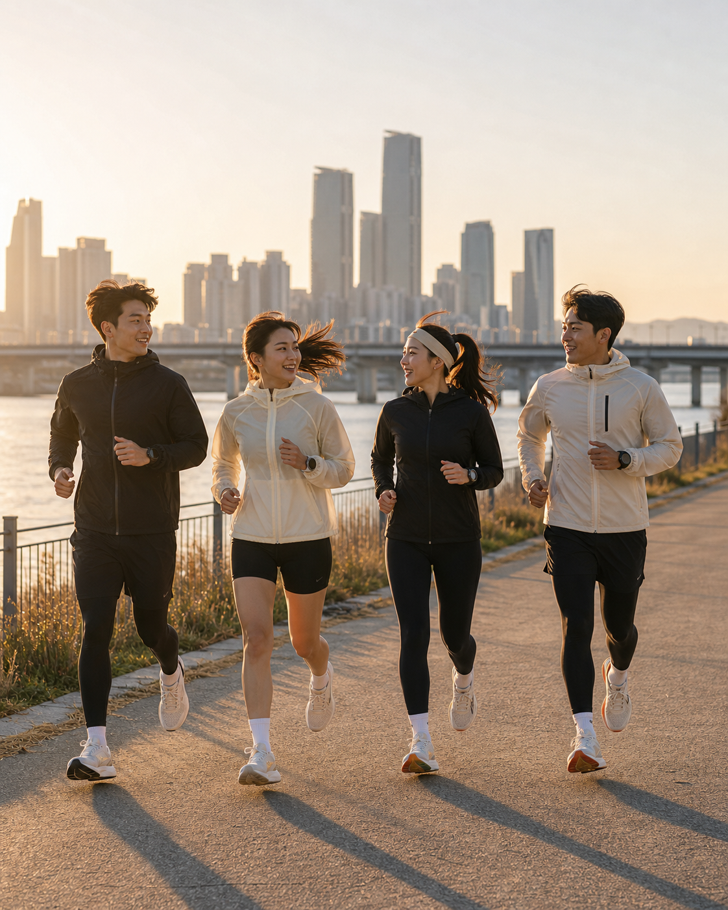
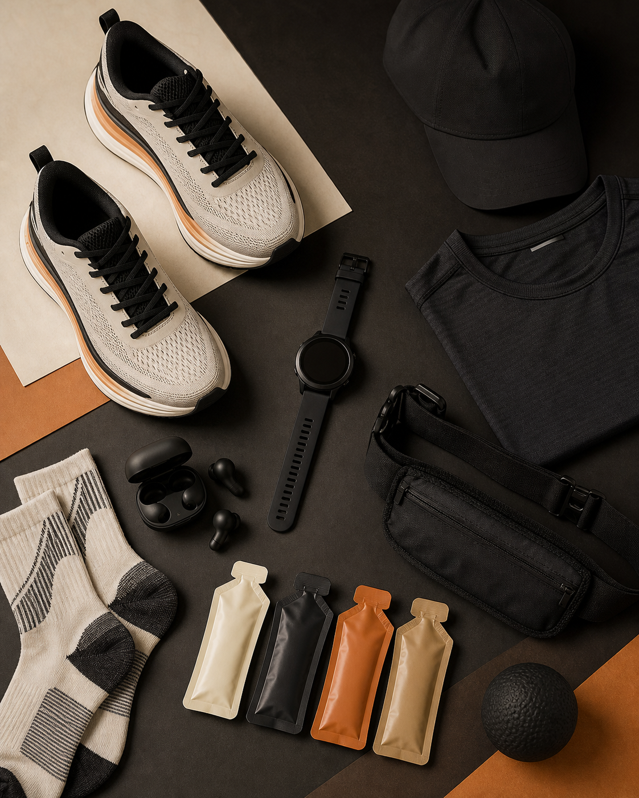

01TREND FRAME
TREND FRAME러닝은 무료지만
러닝은 무료지만
길목엔 시장이 붙는다
러닝크루, 대회, 앱, 매장, 회복제품이 러너의 하루 동선 안으로 들어옵니다.
러닝크루대회앱매장회복제품
02CULTURE
CULTURE혼자 뛰던 러닝이
혼자 뛰던 러닝이
모이는 경험이 됐다
생활체육 참여율 62.9%, 대회 참가 경쟁, 러닝크루가 참여 경험을 키웁니다.
동선인증거점루틴

03PLATFORM
PLATFORM기록은 러너의
기록은 러너의
소속감 카드가 된다
운동 로그가 접수, 인증, 커뮤니티를 잇는 작은 신분증처럼 쓰입니다.
동선인증거점루틴
04PLACE
PLACE러너가 지나는 곳에
러너가 지나는 곳에
거점이 생긴다
피팅, 측정, 보관, 물·간식, 휴식, 러닝 모임이 코스 주변 접점으로 붙습니다.
동선인증거점루틴
05PRODUCT
PRODUCT러닝제품은 전·중·후
러닝제품은 전·중·후
루틴으로 쪼개진다
러닝화 하나보다 준비, 기록, 보급, 회복으로 카테고리가 나뉩니다.
동선인증거점루틴

06CHECKLIST
CHECKLIST숫자보다 먼저,
숫자보다 먼저,
러너 동선을 보세요
어디서 모이고, 뛰고, 쉬고, 다시 사는지를 점검하세요.
동선인증거점루틴